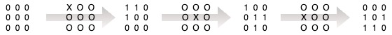
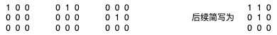
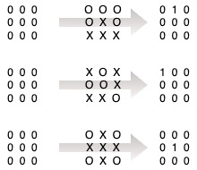
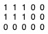
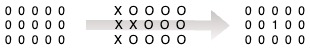
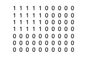
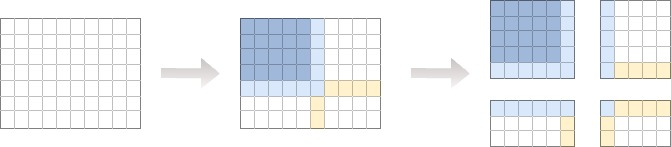

问题描述
对于给定的矩阵（N * M），每个位置存在 0 和 1 两种状态，那么整个矩阵存在 2 ^ (N * M) 种不同的状态，对于给定的状态转移规则，假如存在由状态 A 转移至状态 B 的 flip 路径则称状态 A、B 之间是有解的，需要确认是否任意两个矩阵状态之间都是有解的（Yes/No）
状态转移规则指对于给定一个矩阵元素位置，该位置及其上下左右位置的状态进行翻转（由 1 变 0，或由 0 变 1），以 3 * 3 的矩阵为例，某种 flip 路径如下所示，其中，01 矩阵代表 flip 前后的状态，OX 矩阵代表 flip 路径
问题分析
- 以全零状态为中间状态，任意两个状态有解等同于从全零状态到任意状态有解
- 以基本状态为中间状态，全零状态到任意状态有解等同于从全零状态到任意基本状态有解（基本状态指只有一个 1 的状态）
- 考虑到矩阵的对称性，从全零状态由某个基本状态有解等同于全零状态到该基本状态的所有对称状态有解，因此从全零状态到任意基本状态有解等同于从全零状态到任意标准基本状态有解（标准基本状态值唯一的 1 位于左上角的基本状态）
- 综上所述，任意两个状态有解等同于从全零状态到任意标准基本状态有解（找到全部的基本解之后，任意解即可通过对基本解的异或求和计算得到
分析举例一
对于 3 * 3 的矩阵，标准基本状态的集合如下：
从全零状态到 3 种标准基本状态的 flip 路径解如下：
3 种标准基本状态的解全部找到，因此 3 * 3 的矩阵是任意有解的
分析举例二
对于 3 * 5 的矩阵，标准基本状态的集合如下：
只能找到从全零状态到 1 种标准基本状态的 flip 路径解如下：
6 种标准基本状态的解只找到 1 个，因此 3 * 5 的矩阵不是任意有解的
问题求解
以全零状态为起始状态，通过枚举找寻找基本状态，每找到的一个基本状态后将其标准化并记录下来，通过分区枚举来将大矩阵划分为小矩阵，从而对矩阵降阶，可以极大地降低计算复杂度
分区计算的原理是：选择一个区域的非边界元素位置进行 flip 时不会影响到其他区域的状态，因此可以对矩阵进行分区计算，但需要处理区与区之间的边界情况，这导致算法实现起来略微复杂一些
求解举例
如下图所述，对于 7 * 10 的矩阵，其标准基本状态的集合如下：
其标准基本状态可以看作是一个 4 * 5 的矩阵的全部基本状态的集合，为了确定该 7 * 10 矩阵的左上角的 4 * 5 的矩阵的状态，可以将该 7 * 10 矩阵的左上角的 5 * 6 的矩阵看作是该 7 * 10 矩阵的主分区，右上角的 5 * 5 矩阵、左下角的 3 * 6 矩阵以及右下角的 3 * 5 矩阵均可看作是辅助分区，辅助分区的计算目标就是将所有位置的 1 状态全部清零
- 左上角 5 * 6 主分区最下方和最右方（浅蓝色区域）的状态先忽略不计，先通过求解主分区中 4 * 5 矩阵（深蓝色区域）的全部基本状态来找到 7 * 10 矩阵的标准基本状态的潜在可能解，计算完 5 * 6 主分区之后，即可固定主分区内 4 * 5 区域的状态和 5 * 6 区域的路径
- 接着求解右上角的 5 * 5 辅助分区，在计算过程中，该辅助分区的最左方（浅蓝色区域）的位置是不可达的（这部分路径已经在主分区的计算中固定下来的），最下方（浅黄色区域）的状态可以先忽略不计，计算完右上角的 5 * 5 辅助分区之后，即可固定辅助分区内 4 * 5 区域的状态和 5 * 5 区域的路径
- 接着求解左下角 3 * 6 辅助分区，在计算过程中，该辅助分区的最上方（浅蓝色区域）的位置是不可达的（这部分路径已经在主分区的计算中固定下来的），最右方（浅黄色区域）的状态可以先忽略不计，计算完左下角 3 * 6 辅助分区之后，即可固定辅助分区内 3 * 5 区域的状态和 3 * 6 区域的路径
- 接着求解右下角 3 * 5 辅助分区，在计算过程中，该辅助分区的最上方和最左方（浅蓝色和浅黄色区域）的位置是不可达的（这部分路径已经在主分区和其他辅助分区的计算中固定下来的），所有区域状态都需要纳入考虑，计算完最后一个辅助分区之后，7 * 10 矩阵的所有区域的状态和路径都已经固定了，即可从主分区计算得到的潜在可能解中找到真正的解
- 为了进一步降低计算复杂度，可以将主分区看作是一个待求解的全局大矩阵将其进一步划分为更小的主分区和辅助分区（递归分区），也可以将辅助分区进一步划分为更小的辅助分区（线性分区），所有的分区归根到底都是为了降低枚举的范围，降低时间复杂度和空间复杂度，分区之前为 O(2^(N * M))，分区之后接近无限接近 O(N * M)
弯路（但有意义）
刚开始拿到这个题时直接暴力枚举，算法实现起来很简单，但是一旦矩阵阶数大了之后对时间和空间都是很大的挑战，我尝试通过将矩阵的状态和路径都看作是二进制数并转成十进制整型存储以及使用BitSet来节约空间，通过各种位运算来加速计算过程，详细参见工作记录，最终将 6 * 6 矩阵的计算时间优化到 152 秒，内存消耗 8.25 GB
后来从同学那里得到基本状态这一概念的启发，于是将问题转换为求解标准基本状态从而降低空间消耗，并基于此想到分区计算的思路从而降低时间消耗，最终将 6 * 6 的计算时间优化到 0.03 秒，空间消耗优化到 3 MB，并继续一直求解到 10 * 10，总体来看思路还算直白不是很绕，但具体代码实现细节较为繁琐，是我写过的代码最长的算法题
在没有参考答案可以参照的情况下自己一步一步地尝试解决问题还是很有意义的（懒人在有答案的时候总是喜欢直接看答案），自己从来都不是那种可以一次性就给出周到方案的人，往往会在一段时间内反反复复不厌其烦地对现有方案进行质疑、优化、再质疑、再优化，这其实是一个非常令人着迷的过程。